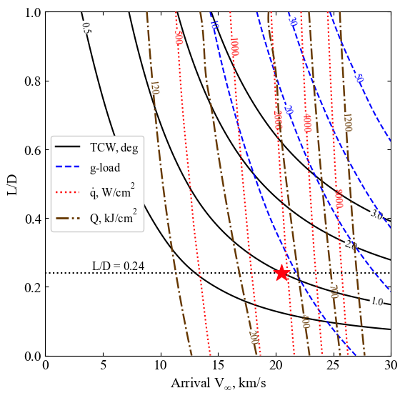
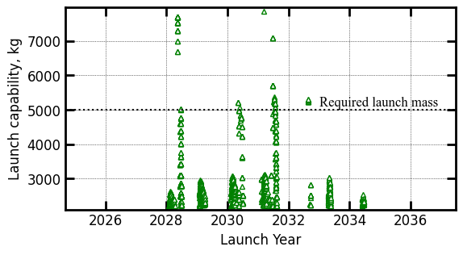
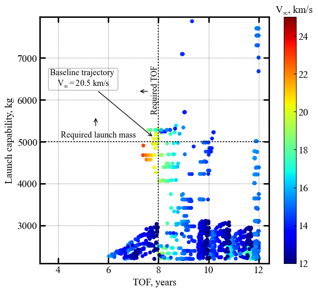

Section 03 - Tradespace Exploration¶
[1]:
from AMAT.planet import Planet
from AMAT.vehicle import Vehicle
import numpy as np
from scipy import interpolate
import matplotlib.pyplot as plt
from matplotlib import rcParams
from matplotlib.patches import Polygon
import os
[2]:
# Create a planet object for Uranus
planet=Planet("URANUS")
planet.h_skip = 1000e3
planet.h_trap = 50e3
# Load an nominal atmospheric profile with height, temp, pressure, density data
planet.loadAtmosphereModel('../../../atmdata/Uranus/uranus-ames.dat', 0 , 1 , 2, 3)
[3]:
# skip if not running for the firs time
os.makedirs('../../../data/acta-astronautica/uranus-orbiter-probe/')
---------------------------------------------------------------------------
FileExistsError Traceback (most recent call last)
Input In [3], in <cell line: 2>()
1 # skip if not running for the firs time
----> 2 os.makedirs('../../../data/acta-astronautica/uranus-orbiter-probe/')
File /usr/lib/python3.8/os.py:223, in makedirs(name, mode, exist_ok)
221 return
222 try:
--> 223 mkdir(name, mode)
224 except OSError:
225 # Cannot rely on checking for EEXIST, since the operating system
226 # could give priority to other errors like EACCES or EROFS
227 if not exist_ok or not path.isdir(name):
FileExistsError: [Errno 17] File exists: '../../../data/acta-astronautica/uranus-orbiter-probe/'
[3]:
vinf_kms_array = np.linspace( 0.0, 30.0, 11)
LD_array = np.linspace( 0.0, 1.0 , 11)
[4]:
runID = 'uranus-lift-'
num_total = len(vinf_kms_array)*len(LD_array)
count = 1
v0_kms_array = np.zeros(len(vinf_kms_array))
v0_kms_array[:] = np.sqrt(1.0*(vinf_kms_array[:]*1E3)**2.0 +\
2*np.ones(len(vinf_kms_array))*\
planet.GM/(planet.RP+1000.0*1.0E3))/1.0E3
overShootLimit_array = np.zeros((len(v0_kms_array),len(LD_array)))
underShootLimit_array = np.zeros((len(v0_kms_array),len(LD_array)))
exitflag_os_array = np.zeros((len(v0_kms_array),len(LD_array)))
exitflag_us_array = np.zeros((len(v0_kms_array),len(LD_array)))
TCW_array = np.zeros((len(v0_kms_array),len(LD_array)))
[6]:
for i in range(0,len(v0_kms_array)):
for j in range(0,len(LD_array)):
vehicle=Vehicle('MSL', 3200.0, 146 , LD_array[j], np.pi*4.5**2.0, 0.0, 1.125, planet)
vehicle.setInitialState(1000.0, 0, 0, v0_kms_array[i], 0, -4.5 ,0.0, 0.0)
vehicle.setSolverParams(1E-6)
overShootLimit_array[i,j], exitflag_os_array[i,j] = vehicle.findOverShootLimit(2400.0, 1.0, -30.0, -5.0, 1E-10, 500e3)
underShootLimit_array[i,j], exitflag_us_array[i,j] = vehicle.findUnderShootLimit(2400.0, 1.0, -30.0, -5.0, 1E-10, 500e3)
TCW_array[i,j] = overShootLimit_array[i,j] - underShootLimit_array[i,j]
print("Run #"+str(count)+" of "+ str(num_total)+": V_infty: "+str(vinf_kms_array[i])+" km/s"+", L/D:"+str(LD_array[j]) + " OSL: "+str(overShootLimit_array[i,j])+" USL: "+str(underShootLimit_array[i,j])+", TCW: "+str(TCW_array[i,j])+" EFOS: "+str(exitflag_os_array[i,j])+ " EFUS: "+str(exitflag_us_array[i,j]))
count = count +1
np.savetxt('../../../data/acta-astronautica/uranus-orbiter-probe/'+runID+'vinf_kms_array.txt',vinf_kms_array)
np.savetxt('../../../data/acta-astronautica/uranus-orbiter-probe/'+runID+'v0_kms_array.txt',v0_kms_array)
np.savetxt('../../../data/acta-astronautica/uranus-orbiter-probe/'+runID+'LD_array.txt',LD_array)
np.savetxt('../../../data/acta-astronautica/uranus-orbiter-probe/'+runID+'overShootLimit_array.txt',overShootLimit_array)
np.savetxt('../../../data/acta-astronautica/uranus-orbiter-probe/'+runID+'exitflag_os_array.txt',exitflag_os_array)
np.savetxt('../../../data/acta-astronautica/uranus-orbiter-probe/'+runID+'undershootLimit_array.txt',underShootLimit_array)
np.savetxt('../../../data/acta-astronautica/uranus-orbiter-probe/'+runID+'exitflag_us_array.txt',exitflag_us_array)
np.savetxt('../../../data/acta-astronautica/uranus-orbiter-probe/'+runID+'TCW_array.txt',TCW_array)
Run #1 of 121: V_infty: 0.0 km/s, L/D:0.0 OSL: -6.014146778015856 USL: -6.014146778015856, TCW: 0.0 EFOS: 1.0 EFUS: 1.0
Run #2 of 121: V_infty: 0.0 km/s, L/D:0.1 OSL: -5.996479764671676 USL: -6.031701875581348, TCW: 0.035222110909671756 EFOS: 1.0 EFUS: 1.0
Run #3 of 121: V_infty: 0.0 km/s, L/D:0.2 OSL: -5.979390008069458 USL: -6.049568045164051, TCW: 0.07017803709459258 EFOS: 1.0 EFUS: 1.0
Run #4 of 121: V_infty: 0.0 km/s, L/D:0.30000000000000004 OSL: -5.962612555122178 USL: -6.068216093972296, TCW: 0.10560353885011864 EFOS: 1.0 EFUS: 1.0
Run #5 of 121: V_infty: 0.0 km/s, L/D:0.4 OSL: -5.9462671300752845 USL: -6.087063239083363, TCW: 0.14079610900807893 EFOS: 1.0 EFUS: 1.0
Run #6 of 121: V_infty: 0.0 km/s, L/D:0.5 OSL: -5.929837731473526 USL: -6.106253286707215, TCW: 0.1764155552336888 EFOS: 1.0 EFUS: 1.0
Run #7 of 121: V_infty: 0.0 km/s, L/D:0.6000000000000001 OSL: -5.914076759545424 USL: -6.125466816574772, TCW: 0.2113900570293481 EFOS: 1.0 EFUS: 1.0
Run #8 of 121: V_infty: 0.0 km/s, L/D:0.7000000000000001 OSL: -5.898389874146233 USL: -6.145601416101272, TCW: 0.24721154195503914 EFOS: 1.0 EFUS: 1.0
Run #9 of 121: V_infty: 0.0 km/s, L/D:0.8 OSL: -5.883865712694387 USL: -6.1658305702439975, TCW: 0.2819648575496103 EFOS: 1.0 EFUS: 1.0
Run #10 of 121: V_infty: 0.0 km/s, L/D:0.9 OSL: -5.868468108183151 USL: -6.186608680654899, TCW: 0.3181405724717479 EFOS: 1.0 EFUS: 1.0
Run #11 of 121: V_infty: 0.0 km/s, L/D:1.0 OSL: -5.854048256042006 USL: -6.2080930233423715, TCW: 0.3540447673003655 EFOS: 1.0 EFUS: 1.0
Run #12 of 121: V_infty: 3.0 km/s, L/D:0.0 OSL: -6.257537135552411 USL: -6.257537135552411, TCW: 0.0 EFOS: 1.0 EFUS: 1.0
Run #13 of 121: V_infty: 3.0 km/s, L/D:0.1 OSL: -6.233686054638383 USL: -6.281974317043932, TCW: 0.048288262405549176 EFOS: 1.0 EFUS: 1.0
Run #14 of 121: V_infty: 3.0 km/s, L/D:0.2 OSL: -6.210637658459746 USL: -6.307090146292467, TCW: 0.09645248783272109 EFOS: 1.0 EFUS: 1.0
Run #15 of 121: V_infty: 3.0 km/s, L/D:0.30000000000000004 OSL: -6.1880053579261585 USL: -6.33269698044387, TCW: 0.14469162251771195 EFOS: 1.0 EFUS: 1.0
Run #16 of 121: V_infty: 3.0 km/s, L/D:0.4 OSL: -6.166301999546704 USL: -6.359035163568478, TCW: 0.19273316402177443 EFOS: 1.0 EFUS: 1.0
Run #17 of 121: V_infty: 3.0 km/s, L/D:0.5 OSL: -6.145081174581719 USL: -6.3863107357792614, TCW: 0.24122956119754235 EFOS: 1.0 EFUS: 1.0
Run #18 of 121: V_infty: 3.0 km/s, L/D:0.6000000000000001 OSL: -6.124233778591588 USL: -6.414258735530893, TCW: 0.2900249569393054 EFOS: 1.0 EFUS: 1.0
Run #19 of 121: V_infty: 3.0 km/s, L/D:0.7000000000000001 OSL: -6.104244637008378 USL: -6.442909211255028, TCW: 0.33866457424664986 EFOS: 1.0 EFUS: 1.0
Run #20 of 121: V_infty: 3.0 km/s, L/D:0.8 OSL: -6.084831173920975 USL: -6.472597727752145, TCW: 0.3877665538311703 EFOS: 1.0 EFUS: 1.0
Run #21 of 121: V_infty: 3.0 km/s, L/D:0.9 OSL: -6.0656675480277045 USL: -6.503377966582775, TCW: 0.43771041855507065 EFOS: 1.0 EFUS: 1.0
Run #22 of 121: V_infty: 3.0 km/s, L/D:1.0 OSL: -6.046976332872873 USL: -6.535871022224455, TCW: 0.4888946893515822 EFOS: 1.0 EFUS: 1.0
Run #23 of 121: V_infty: 6.0 km/s, L/D:0.0 OSL: -6.818570367413486 USL: -6.818570367413486, TCW: 0.0 EFOS: 1.0 EFUS: 1.0
Run #24 of 121: V_infty: 6.0 km/s, L/D:0.1 OSL: -6.781581237446517 USL: -6.857403517897183, TCW: 0.07582228045066586 EFOS: 1.0 EFUS: 1.0
Run #25 of 121: V_infty: 6.0 km/s, L/D:0.2 OSL: -6.7462062144659285 USL: -6.898100639664335, TCW: 0.15189442519840668 EFOS: 1.0 EFUS: 1.0
Run #26 of 121: V_infty: 6.0 km/s, L/D:0.30000000000000004 OSL: -6.712305977980577 USL: -6.94087362897335, TCW: 0.22856765099277254 EFOS: 1.0 EFUS: 1.0
Run #27 of 121: V_infty: 6.0 km/s, L/D:0.4 OSL: -6.679705088099581 USL: -6.985790409526089, TCW: 0.306085321426508 EFOS: 1.0 EFUS: 1.0
Run #28 of 121: V_infty: 6.0 km/s, L/D:0.5 OSL: -6.6480774740557536 USL: -7.032939181481197, TCW: 0.38486170742544346 EFOS: 1.0 EFUS: 1.0
Run #29 of 121: V_infty: 6.0 km/s, L/D:0.6000000000000001 OSL: -6.617345648719493 USL: -7.082772662652133, TCW: 0.46542701393263997 EFOS: 1.0 EFUS: 1.0
Run #30 of 121: V_infty: 6.0 km/s, L/D:0.7000000000000001 OSL: -6.587262535394984 USL: -7.134941040549165, TCW: 0.547678505154181 EFOS: 1.0 EFUS: 1.0
Run #31 of 121: V_infty: 6.0 km/s, L/D:0.8 OSL: -6.557994193353807 USL: -7.189402856220113, TCW: 0.6314086628663063 EFOS: 1.0 EFUS: 1.0
Run #32 of 121: V_infty: 6.0 km/s, L/D:0.9 OSL: -6.529342605863349 USL: -7.246430691775458, TCW: 0.7170880859121098 EFOS: 1.0 EFUS: 1.0
Run #33 of 121: V_infty: 6.0 km/s, L/D:1.0 OSL: -6.502826812429703 USL: -7.305984585746046, TCW: 0.8031577733163431 EFOS: 1.0 EFUS: 1.0
Run #34 of 121: V_infty: 9.0 km/s, L/D:0.0 OSL: -7.467896069629205 USL: -7.467896069629205, TCW: 0.0 EFOS: 1.0 EFUS: 1.0
Run #35 of 121: V_infty: 9.0 km/s, L/D:0.1 OSL: -7.413247089407378 USL: -7.528575830638147, TCW: 0.11532874123076908 EFOS: 1.0 EFUS: 1.0
Run #36 of 121: V_infty: 9.0 km/s, L/D:0.2 OSL: -7.363175855589361 USL: -7.597219072049484, TCW: 0.2340432164601225 EFOS: 1.0 EFUS: 1.0
Run #37 of 121: V_infty: 9.0 km/s, L/D:0.30000000000000004 OSL: -7.317002437757765 USL: -7.674101594311651, TCW: 0.35709915655388613 EFOS: 1.0 EFUS: 1.0
Run #38 of 121: V_infty: 9.0 km/s, L/D:0.4 OSL: -7.2746134361113945 USL: -7.758429196364887, TCW: 0.48381576025349204 EFOS: 1.0 EFUS: 1.0
Run #39 of 121: V_infty: 9.0 km/s, L/D:0.5 OSL: -7.235742339325952 USL: -7.849793348832463, TCW: 0.614051009506511 EFOS: 1.0 EFUS: 1.0
Run #40 of 121: V_infty: 9.0 km/s, L/D:0.6000000000000001 OSL: -7.19974040192028 USL: -7.948840741828462, TCW: 0.7491003399081819 EFOS: 1.0 EFUS: 1.0
Run #41 of 121: V_infty: 9.0 km/s, L/D:0.7000000000000001 OSL: -7.166282414054876 USL: -8.05546431145558, TCW: 0.8891818974007037 EFOS: 1.0 EFUS: 1.0
Run #42 of 121: V_infty: 9.0 km/s, L/D:0.8 OSL: -7.13482277104049 USL: -8.170028023941995, TCW: 1.0352052529015054 EFOS: 1.0 EFUS: 1.0
Run #43 of 121: V_infty: 9.0 km/s, L/D:0.9 OSL: -7.105187529195973 USL: -8.29132241104162, TCW: 1.1861348818456463 EFOS: 1.0 EFUS: 1.0
Run #44 of 121: V_infty: 9.0 km/s, L/D:1.0 OSL: -7.077082289815735 USL: -8.420592503152875, TCW: 1.3435102133371402 EFOS: 1.0 EFUS: 1.0
Run #45 of 121: V_infty: 12.0 km/s, L/D:0.0 OSL: -8.158739352875273 USL: -8.158739352875273, TCW: 0.0 EFOS: 1.0 EFUS: 1.0
Run #46 of 121: V_infty: 12.0 km/s, L/D:0.1 OSL: -8.074472815660556 USL: -8.256238294397917, TCW: 0.18176547873736126 EFOS: 1.0 EFUS: 1.0
Run #47 of 121: V_infty: 12.0 km/s, L/D:0.2 OSL: -8.001767616478901 USL: -8.367832808726234, TCW: 0.36606519224733347 EFOS: 1.0 EFUS: 1.0
Run #48 of 121: V_infty: 12.0 km/s, L/D:0.30000000000000004 OSL: -7.94003778244587 USL: -8.495153419862618, TCW: 0.5551156374167476 EFOS: 1.0 EFUS: 1.0
Run #49 of 121: V_infty: 12.0 km/s, L/D:0.4 OSL: -7.889445435357629 USL: -8.63928960305202, TCW: 0.7498441676943912 EFOS: 1.0 EFUS: 1.0
Run #50 of 121: V_infty: 12.0 km/s, L/D:0.5 OSL: -7.845175989205018 USL: -8.799402271488361, TCW: 0.9542262822833436 EFOS: 1.0 EFUS: 1.0
Run #51 of 121: V_infty: 12.0 km/s, L/D:0.6000000000000001 OSL: -7.804963952075923 USL: -8.975296016415086, TCW: 1.1703320643391635 EFOS: 1.0 EFUS: 1.0
Run #52 of 121: V_infty: 12.0 km/s, L/D:0.7000000000000001 OSL: -7.7679812125825265 USL: -9.168843087791174, TCW: 1.4008618752086477 EFOS: 1.0 EFUS: 1.0
Run #53 of 121: V_infty: 12.0 km/s, L/D:0.8 OSL: -7.734120959576103 USL: -9.377953335369966, TCW: 1.6438323757938633 EFOS: 1.0 EFUS: 1.0
Run #54 of 121: V_infty: 12.0 km/s, L/D:0.9 OSL: -7.702883813071821 USL: -9.602331597561715, TCW: 1.8994477844898938 EFOS: 1.0 EFUS: 1.0
Run #55 of 121: V_infty: 12.0 km/s, L/D:1.0 OSL: -7.673651090663043 USL: -9.840848634921713, TCW: 2.16719754425867 EFOS: 1.0 EFUS: 1.0
Run #56 of 121: V_infty: 15.0 km/s, L/D:0.0 OSL: -8.822443485387339 USL: -8.822443485387339, TCW: 0.0 EFOS: 1.0 EFUS: 1.0
Run #57 of 121: V_infty: 15.0 km/s, L/D:0.1 OSL: -8.70764660247005 USL: -8.961434734355862, TCW: 0.2537881318858126 EFOS: 1.0 EFUS: 1.0
Run #58 of 121: V_infty: 15.0 km/s, L/D:0.2 OSL: -8.61426795443549 USL: -9.126287214421609, TCW: 0.5120192599861184 EFOS: 1.0 EFUS: 1.0
Run #59 of 121: V_infty: 15.0 km/s, L/D:0.30000000000000004 OSL: -8.53725097811548 USL: -9.321098323180195, TCW: 0.7838473450647143 EFOS: 1.0 EFUS: 1.0
Run #60 of 121: V_infty: 15.0 km/s, L/D:0.4 OSL: -8.473057144492486 USL: -9.544516694568301, TCW: 1.071459550075815 EFOS: 1.0 EFUS: 1.0
Run #61 of 121: V_infty: 15.0 km/s, L/D:0.5 OSL: -8.42043986029239 USL: -9.797744868847076, TCW: 1.3773050085546856 EFOS: 1.0 EFUS: 1.0
Run #62 of 121: V_infty: 15.0 km/s, L/D:0.6000000000000001 OSL: -8.377951328093332 USL: -10.07993680121217, TCW: 1.7019854731188389 EFOS: 1.0 EFUS: 1.0
Run #63 of 121: V_infty: 15.0 km/s, L/D:0.7000000000000001 OSL: -8.339467942623742 USL: -10.389442341402173, TCW: 2.0499743987784314 EFOS: 1.0 EFUS: 1.0
Run #64 of 121: V_infty: 15.0 km/s, L/D:0.8 OSL: -8.304189959544601 USL: -10.724752717651427, TCW: 2.4205627581068256 EFOS: 1.0 EFUS: 1.0
Run #65 of 121: V_infty: 15.0 km/s, L/D:0.9 OSL: -8.272106016993348 USL: -11.084964052570285, TCW: 2.8128580355769373 EFOS: 1.0 EFUS: 1.0
Run #66 of 121: V_infty: 15.0 km/s, L/D:1.0 OSL: -8.241550072289101 USL: -11.467453948971524, TCW: 3.2259038766824233 EFOS: 1.0 EFUS: 1.0
Run #67 of 121: V_infty: 18.0 km/s, L/D:0.0 OSL: -9.423033561852208 USL: -9.423033561852208, TCW: 0.0 EFOS: 1.0 EFUS: 1.0
Run #68 of 121: V_infty: 18.0 km/s, L/D:0.1 OSL: -9.276845839649468 USL: -9.608598512822937, TCW: 0.3317526731734688 EFOS: 1.0 EFUS: 1.0
Run #69 of 121: V_infty: 18.0 km/s, L/D:0.2 OSL: -9.161029926945048 USL: -9.836698800500017, TCW: 0.6756688735549687 EFOS: 1.0 EFUS: 1.0
Run #70 of 121: V_infty: 18.0 km/s, L/D:0.30000000000000004 OSL: -9.070941692134511 USL: -10.111201974341384, TCW: 1.040260282206873 EFOS: 1.0 EFUS: 1.0
Run #71 of 121: V_infty: 18.0 km/s, L/D:0.4 OSL: -8.998576795765985 USL: -10.431843649421353, TCW: 1.4332668536553683 EFOS: 1.0 EFUS: 1.0
Run #72 of 121: V_infty: 18.0 km/s, L/D:0.5 OSL: -8.93898004813309 USL: -10.798441599108628, TCW: 1.8594615509755386 EFOS: 1.0 EFUS: 1.0
Run #73 of 121: V_infty: 18.0 km/s, L/D:0.6000000000000001 OSL: -8.890233187485137 USL: -11.208203589176264, TCW: 2.3179704016911273 EFOS: 1.0 EFUS: 1.0
Run #74 of 121: V_infty: 18.0 km/s, L/D:0.7000000000000001 OSL: -8.849897776945 USL: -11.658280090505286, TCW: 2.808382313560287 EFOS: 1.0 EFUS: 1.0
Run #75 of 121: V_infty: 18.0 km/s, L/D:0.8 OSL: -8.8141628617268 USL: -12.145195113935188, TCW: 3.331032252208388 EFOS: 1.0 EFUS: 1.0
Run #76 of 121: V_infty: 18.0 km/s, L/D:0.9 OSL: -8.78065045524636 USL: -12.665558915687143, TCW: 3.8849084604407835 EFOS: 1.0 EFUS: 1.0
Run #77 of 121: V_infty: 18.0 km/s, L/D:1.0 OSL: -8.749655485717085 USL: -13.21590352079511, TCW: 4.466248035078024 EFOS: 1.0 EFUS: 1.0
Run #78 of 121: V_infty: 21.0 km/s, L/D:0.0 OSL: -9.950224731965136 USL: -9.950224731965136, TCW: 0.0 EFOS: 1.0 EFUS: 1.0
Run #79 of 121: V_infty: 21.0 km/s, L/D:0.1 OSL: -9.770493776140938 USL: -10.185260453527007, TCW: 0.4147666773860692 EFOS: 1.0 EFUS: 1.0
Run #80 of 121: V_infty: 21.0 km/s, L/D:0.2 OSL: -9.635842402694834 USL: -10.482950753048499, TCW: 0.8471083503536647 EFOS: 1.0 EFUS: 1.0
Run #81 of 121: V_infty: 21.0 km/s, L/D:0.30000000000000004 OSL: -9.532865256169316 USL: -10.848344965215801, TCW: 1.3154797090464854 EFOS: 1.0 EFUS: 1.0
Run #82 of 121: V_infty: 21.0 km/s, L/D:0.4 OSL: -9.453700263184146 USL: -11.280050710756768, TCW: 1.8263504475726222 EFOS: 1.0 EFUS: 1.0
Run #83 of 121: V_infty: 21.0 km/s, L/D:0.5 OSL: -9.38964038667109 USL: -11.775505100904411, TCW: 2.385864714233321 EFOS: 1.0 EFUS: 1.0
Run #84 of 121: V_infty: 21.0 km/s, L/D:0.6000000000000001 OSL: -9.336065835832414 USL: -12.329557458615454, TCW: 2.99349162278304 EFOS: 1.0 EFUS: 1.0
Run #85 of 121: V_infty: 21.0 km/s, L/D:0.7000000000000001 OSL: -9.291402027320146 USL: -12.937170421791961, TCW: 3.6457683944718156 EFOS: 1.0 EFUS: 1.0
Run #86 of 121: V_infty: 21.0 km/s, L/D:0.8 OSL: -9.254031248365209 USL: -13.59188097738297, TCW: 4.337849729017762 EFOS: 1.0 EFUS: 1.0
Run #87 of 121: V_infty: 21.0 km/s, L/D:0.9 OSL: -9.220682355662575 USL: -14.287640171078237, TCW: 5.0669578154156625 EFOS: 1.0 EFUS: 1.0
Run #88 of 121: V_infty: 21.0 km/s, L/D:1.0 OSL: -9.189070968732267 USL: -15.020782186711585, TCW: 5.8317112179793185 EFOS: 1.0 EFUS: 1.0
Run #89 of 121: V_infty: 24.0 km/s, L/D:0.0 OSL: -10.405023227831407 USL: -10.405023227831407, TCW: 0.0 EFOS: 1.0 EFUS: 1.0
Run #90 of 121: V_infty: 24.0 km/s, L/D:0.1 OSL: -10.193318385499879 USL: -10.691183385442855, TCW: 0.4978649999429763 EFOS: 1.0 EFUS: 1.0
Run #91 of 121: V_infty: 24.0 km/s, L/D:0.2 OSL: -10.039393152947014 USL: -11.064223561861581, TCW: 1.0248304089145677 EFOS: 1.0 EFUS: 1.0
Run #92 of 121: V_infty: 24.0 km/s, L/D:0.30000000000000004 OSL: -9.927161099749355 USL: -11.528183794398501, TCW: 1.6010226946491457 EFOS: 1.0 EFUS: 1.0
Run #93 of 121: V_infty: 24.0 km/s, L/D:0.4 OSL: -9.841252643382177 USL: -12.080827104709897, TCW: 2.23957446132772 EFOS: 1.0 EFUS: 1.0
Run #94 of 121: V_infty: 24.0 km/s, L/D:0.5 OSL: -9.773414220835548 USL: -12.7167848920908, TCW: 2.943370671255252 EFOS: 1.0 EFUS: 1.0
Run #95 of 121: V_infty: 24.0 km/s, L/D:0.6000000000000001 OSL: -9.717188025915675 USL: -13.426244073598355, TCW: 3.7090560476826795 EFOS: 1.0 EFUS: 1.0
Run #96 of 121: V_infty: 24.0 km/s, L/D:0.7000000000000001 OSL: -9.668971617502393 USL: -14.200977945238265, TCW: 4.532006327735871 EFOS: 1.0 EFUS: 1.0
Run #97 of 121: V_infty: 24.0 km/s, L/D:0.8 OSL: -9.62906237680727 USL: -15.032767140182841, TCW: 5.403704763375572 EFOS: 1.0 EFUS: 1.0
Run #98 of 121: V_infty: 24.0 km/s, L/D:0.9 OSL: -9.594417216776492 USL: -15.911456345456827, TCW: 6.317039128680335 EFOS: 1.0 EFUS: 1.0
Run #99 of 121: V_infty: 24.0 km/s, L/D:1.0 OSL: -9.562251161860331 USL: -16.832815426168963, TCW: 7.270564264308632 EFOS: 1.0 EFUS: 1.0
Run #100 of 121: V_infty: 27.0 km/s, L/D:0.0 OSL: -10.794228522609046 USL: -10.794228522609046, TCW: 0.0 EFOS: 1.0 EFUS: 1.0
Run #101 of 121: V_infty: 27.0 km/s, L/D:0.1 OSL: -10.551823005407641 USL: -11.133269773181382, TCW: 0.5814467677737412 EFOS: 1.0 EFUS: 1.0
Run #102 of 121: V_infty: 27.0 km/s, L/D:0.2 OSL: -10.3817767477085 USL: -11.5846518111357, TCW: 1.2028750634272 EFOS: 1.0 EFUS: 1.0
Run #103 of 121: V_infty: 27.0 km/s, L/D:0.30000000000000004 OSL: -10.260243290013022 USL: -12.153417799872841, TCW: 1.8931745098598185 EFOS: 1.0 EFUS: 1.0
Run #104 of 121: V_infty: 27.0 km/s, L/D:0.4 OSL: -10.168590816629148 USL: -12.83348686509271, TCW: 2.664896048463561 EFOS: 1.0 EFUS: 1.0
Run #105 of 121: V_infty: 27.0 km/s, L/D:0.5 OSL: -10.097277945606038 USL: -13.61593602458015, TCW: 3.518658078974113 EFOS: 1.0 EFUS: 1.0
Run #106 of 121: V_infty: 27.0 km/s, L/D:0.6000000000000001 OSL: -10.038482309828396 USL: -14.48630212169519, TCW: 4.447819811866793 EFOS: 1.0 EFUS: 1.0
Run #107 of 121: V_infty: 27.0 km/s, L/D:0.7000000000000001 OSL: -9.988451154713403 USL: -15.432438788575382, TCW: 5.44398763386198 EFOS: 1.0 EFUS: 1.0
Run #108 of 121: V_infty: 27.0 km/s, L/D:0.8 OSL: -9.945032794330473 USL: -16.441904573439388, TCW: 6.496871779108915 EFOS: 1.0 EFUS: 1.0
Run #109 of 121: V_infty: 27.0 km/s, L/D:0.9 OSL: -9.909438966842572 USL: -17.503672059392557, TCW: 7.594233092549985 EFOS: 1.0 EFUS: 1.0
Run #110 of 121: V_infty: 27.0 km/s, L/D:1.0 OSL: -9.876806450556614 USL: -18.609886169342644, TCW: 8.73307971878603 EFOS: 1.0 EFUS: 1.0
Run #111 of 121: V_infty: 30.0 km/s, L/D:0.0 OSL: -11.127762189044006 USL: -11.127762189044006, TCW: 0.0 EFOS: 1.0 EFUS: 1.0
Run #112 of 121: V_infty: 30.0 km/s, L/D:0.1 OSL: -10.855819774569682 USL: -11.519232540540543, TCW: 0.6634127659708611 EFOS: 1.0 EFUS: 1.0
Run #113 of 121: V_infty: 30.0 km/s, L/D:0.2 OSL: -10.670740207915514 USL: -12.051510004021111, TCW: 1.3807697961055965 EFOS: 1.0 EFUS: 1.0
Run #114 of 121: V_infty: 30.0 km/s, L/D:0.30000000000000004 OSL: -10.54100341450976 USL: -12.727797359621036, TCW: 2.186793945111276 EFOS: 1.0 EFUS: 1.0
Run #115 of 121: V_infty: 30.0 km/s, L/D:0.4 OSL: -10.445578596209089 USL: -13.539805954023905, TCW: 3.094227357814816 EFOS: 1.0 EFUS: 1.0
Run #116 of 121: V_infty: 30.0 km/s, L/D:0.5 OSL: -10.370849240171083 USL: -14.470429737484665, TCW: 4.099580497313582 EFOS: 1.0 EFUS: 1.0
Run #117 of 121: V_infty: 30.0 km/s, L/D:0.6000000000000001 OSL: -10.30999373031591 USL: -15.502242808342999, TCW: 5.192249078027089 EFOS: 1.0 EFUS: 1.0
Run #118 of 121: V_infty: 30.0 km/s, L/D:0.7000000000000001 OSL: -10.258472719106067 USL: -16.616370620049565, TCW: 6.357897900943499 EFOS: 1.0 EFUS: 1.0
Run #119 of 121: V_infty: 30.0 km/s, L/D:0.8 OSL: -10.213473868298024 USL: -17.80029565168661, TCW: 7.5868217833885865 EFOS: 1.0 EFUS: 1.0
Run #120 of 121: V_infty: 30.0 km/s, L/D:0.9 OSL: -10.174737286779418 USL: -19.04341915404075, TCW: 8.86868186726133 EFOS: 1.0 EFUS: 1.0
Run #121 of 121: V_infty: 30.0 km/s, L/D:1.0 OSL: -10.140913652212475 USL: -20.337019965954823, TCW: 10.196106313742348 EFOS: 1.0 EFUS: 1.0
[7]:
acc_net_g_max_array = np.zeros((len(v0_kms_array),len(LD_array)))
stag_pres_atm_max_array = np.zeros((len(v0_kms_array),len(LD_array)))
q_stag_total_max_array = np.zeros((len(v0_kms_array),len(LD_array)))
heatload_max_array = np.zeros((len(v0_kms_array),len(LD_array)))
for i in range(0,len(v0_kms_array)):
for j in range(0,len(LD_array)):
vehicle=Vehicle('MSL', 3200.0, 146 , LD_array[j], np.pi*4.5**2.0, 0.0, 1.125, planet)
vehicle.setInitialState(1000.0,0.0,0.0,v0_kms_array[i],0.0,overShootLimit_array[i,j],0.0,0.0)
vehicle.setSolverParams(1E-6)
vehicle.propogateEntry (2400.0, 1.0, 180.0)
# Extract and save variables to plot
t_min_os = vehicle.t_minc
h_km_os = vehicle.h_kmc
acc_net_g_os = vehicle.acc_net_g
q_stag_con_os = vehicle.q_stag_con
q_stag_rad_os = vehicle.q_stag_rad
rc_os = vehicle.rc
vc_os = vehicle.vc
stag_pres_atm_os = vehicle.computeStagPres(rc_os,vc_os)/(1.01325E5)
heatload_os = vehicle.heatload
vehicle=Vehicle('MSL', 3200.0, 146 , LD_array[j], np.pi*4.5**2.0, 0.0, 1.125, planet)
vehicle.setInitialState(1000.0,0.0,0.0,v0_kms_array[i],0.0,underShootLimit_array[i,j],0.0,0.0)
vehicle.setSolverParams(1E-6)
vehicle.propogateEntry (2400.0, 1.0, 0.0)
# Extract and save variable to plot
t_min_us = vehicle.t_minc
h_km_us = vehicle.h_kmc
acc_net_g_us = vehicle.acc_net_g
q_stag_con_us = vehicle.q_stag_con
q_stag_rad_us = vehicle.q_stag_rad
rc_us = vehicle.rc
vc_us = vehicle.vc
stag_pres_atm_us = vehicle.computeStagPres(rc_us,vc_us)/(1.01325E5)
heatload_us = vehicle.heatload
q_stag_total_os = q_stag_con_os + q_stag_rad_os
q_stag_total_us = q_stag_con_us + q_stag_rad_us
acc_net_g_max_array[i,j] = max(max(acc_net_g_os),max(acc_net_g_us))
stag_pres_atm_max_array[i,j] = max(max(stag_pres_atm_os),max(stag_pres_atm_os))
q_stag_total_max_array[i,j] = max(max(q_stag_total_os),max(q_stag_total_us))
heatload_max_array[i,j] = max(max(heatload_os),max(heatload_os))
print("V_infty: "+str(vinf_kms_array[i])+" km/s"+", L/D: "+str(LD_array[j])+" G_MAX: "+str(acc_net_g_max_array[i,j])+" QDOT_MAX: "+str(q_stag_total_max_array[i,j])+" J_MAX: "+str(heatload_max_array[i,j])+" STAG. PRES: "+str(stag_pres_atm_max_array[i,j]))
np.savetxt('../../../data/acta-astronautica/uranus-orbiter-probe/'+runID+'acc_net_g_max_array.txt',acc_net_g_max_array)
np.savetxt('../../../data/acta-astronautica/uranus-orbiter-probe/'+runID+'stag_pres_atm_max_array.txt',stag_pres_atm_max_array)
np.savetxt('../../../data/acta-astronautica/uranus-orbiter-probe/'+runID+'q_stag_total_max_array.txt',q_stag_total_max_array)
np.savetxt('../../../data/acta-astronautica/uranus-orbiter-probe/'+runID+'heatload_max_array.txt',heatload_max_array)
V_infty: 0.0 km/s, L/D: 0.0 G_MAX: 0.1825178727124582 QDOT_MAX: 103.93138457749362 J_MAX: 47786.144951918744 STAG. PRES: 0.002585842149662393
V_infty: 0.0 km/s, L/D: 0.1 G_MAX: 0.18645223607008765 QDOT_MAX: 104.70535651553692 J_MAX: 48098.23313046585 STAG. PRES: 0.002539648681000534
V_infty: 0.0 km/s, L/D: 0.2 G_MAX: 0.19225763189175374 QDOT_MAX: 105.47139128915606 J_MAX: 48441.122344672396 STAG. PRES: 0.0024963804257682764
V_infty: 0.0 km/s, L/D: 0.30000000000000004 G_MAX: 0.2002814268252643 QDOT_MAX: 106.3104927116782 J_MAX: 48773.318865616966 STAG. PRES: 0.0024536075488077883
V_infty: 0.0 km/s, L/D: 0.4 G_MAX: 0.21009681601512656 QDOT_MAX: 107.12293648782503 J_MAX: 49109.419747258406 STAG. PRES: 0.002411661120022476
V_infty: 0.0 km/s, L/D: 0.5 G_MAX: 0.22174620997813446 QDOT_MAX: 107.93560988611375 J_MAX: 49444.58233643851 STAG. PRES: 0.0023694263117217495
V_infty: 0.0 km/s, L/D: 0.6000000000000001 G_MAX: 0.23454918566997493 QDOT_MAX: 108.61672096725906 J_MAX: 49783.93468472513 STAG. PRES: 0.0023294729664470027
V_infty: 0.0 km/s, L/D: 0.7000000000000001 G_MAX: 0.24987331929166146 QDOT_MAX: 109.49555778946626 J_MAX: 50125.37284374557 STAG. PRES: 0.0022900362841391116
V_infty: 0.0 km/s, L/D: 0.8 G_MAX: 0.26627019066352814 QDOT_MAX: 110.27439586073795 J_MAX: 50479.674183273826 STAG. PRES: 0.0022539369029861726
V_infty: 0.0 km/s, L/D: 0.9 G_MAX: 0.2840863326974155 QDOT_MAX: 111.05025841712627 J_MAX: 50813.325503548855 STAG. PRES: 0.00221673848278717
V_infty: 0.0 km/s, L/D: 1.0 G_MAX: 0.30360301441269705 QDOT_MAX: 111.88750631178405 J_MAX: 51168.70738135336 STAG. PRES: 0.0021831003086576354
V_infty: 3.0 km/s, L/D: 0.0 G_MAX: 0.2610815862943659 QDOT_MAX: 123.7269971250725 J_MAX: 55272.78424452141 STAG. PRES: 0.0036984328041782277
V_infty: 3.0 km/s, L/D: 0.1 G_MAX: 0.2691958934871717 QDOT_MAX: 125.17253612184415 J_MAX: 55799.93752398366 STAG. PRES: 0.003605249460571907
V_infty: 3.0 km/s, L/D: 0.2 G_MAX: 0.2803710367008518 QDOT_MAX: 126.6632513966053 J_MAX: 56346.851810103406 STAG. PRES: 0.003517001487749616
V_infty: 3.0 km/s, L/D: 0.30000000000000004 G_MAX: 0.29423791755116896 QDOT_MAX: 128.09878775373096 J_MAX: 56886.626919343376 STAG. PRES: 0.0034312109932906607
V_infty: 3.0 km/s, L/D: 0.4 G_MAX: 0.3109761820522291 QDOT_MAX: 129.52078327444985 J_MAX: 57452.320841275454 STAG. PRES: 0.0033515949016726426
V_infty: 3.0 km/s, L/D: 0.5 G_MAX: 0.330532823090998 QDOT_MAX: 130.9268115242652 J_MAX: 58001.81257587686 STAG. PRES: 0.003272407739659814
V_infty: 3.0 km/s, L/D: 0.6000000000000001 G_MAX: 0.35245475989351194 QDOT_MAX: 132.25811064871255 J_MAX: 58549.92637737571 STAG. PRES: 0.0031954327853736387
V_infty: 3.0 km/s, L/D: 0.7000000000000001 G_MAX: 0.37642173987811894 QDOT_MAX: 133.49462318294826 J_MAX: 59122.55739960922 STAG. PRES: 0.003121769861286549
V_infty: 3.0 km/s, L/D: 0.8 G_MAX: 0.40276001232241754 QDOT_MAX: 134.72513254541636 J_MAX: 59685.124974776554 STAG. PRES: 0.003049591539622768
V_infty: 3.0 km/s, L/D: 0.9 G_MAX: 0.43001326513512744 QDOT_MAX: 135.73822460670004 J_MAX: 60217.94710902102 STAG. PRES: 0.002975453656759935
V_infty: 3.0 km/s, L/D: 1.0 G_MAX: 0.4598829095352068 QDOT_MAX: 136.80626406381074 J_MAX: 60807.32729618269 STAG. PRES: 0.002906582820794569
V_infty: 6.0 km/s, L/D: 0.0 G_MAX: 0.5731831400908258 QDOT_MAX: 183.11798659933686 J_MAX: 71941.74352249224 STAG. PRES: 0.00811740808093039
V_infty: 6.0 km/s, L/D: 0.1 G_MAX: 0.610883229203313 QDOT_MAX: 188.0624765657999 J_MAX: 73346.37474990835 STAG. PRES: 0.007645288741732226
V_infty: 6.0 km/s, L/D: 0.2 G_MAX: 0.6564418674366456 QDOT_MAX: 193.01633779158445 J_MAX: 74764.9162390683 STAG. PRES: 0.007188897258093375
V_infty: 6.0 km/s, L/D: 0.30000000000000004 G_MAX: 0.7110238187524406 QDOT_MAX: 198.01756025939898 J_MAX: 76195.4486674108 STAG. PRES: 0.006750267370985732
V_infty: 6.0 km/s, L/D: 0.4 G_MAX: 0.7752907834550891 QDOT_MAX: 203.06099113285197 J_MAX: 77591.48435387922 STAG. PRES: 0.006327229257767225
V_infty: 6.0 km/s, L/D: 0.5 G_MAX: 0.8499496168330559 QDOT_MAX: 208.15302029153503 J_MAX: 79007.67037532241 STAG. PRES: 0.005935271654132646
V_infty: 6.0 km/s, L/D: 0.6000000000000001 G_MAX: 0.9355066414369365 QDOT_MAX: 213.27347460930056 J_MAX: 80379.1938902261 STAG. PRES: 0.00557137552222821
V_infty: 6.0 km/s, L/D: 0.7000000000000001 G_MAX: 1.032906139283866 QDOT_MAX: 218.47873825791052 J_MAX: 81741.65303210409 STAG. PRES: 0.005256381221037729
V_infty: 6.0 km/s, L/D: 0.8 G_MAX: 1.143337790675291 QDOT_MAX: 223.83860651469342 J_MAX: 83083.400640058 STAG. PRES: 0.005009423435060594
V_infty: 6.0 km/s, L/D: 0.9 G_MAX: 1.266802414033078 QDOT_MAX: 229.28356814446227 J_MAX: 84417.43996629068 STAG. PRES: 0.004822383047231776
V_infty: 6.0 km/s, L/D: 1.0 G_MAX: 1.405761970625625 QDOT_MAX: 234.96405777531288 J_MAX: 85763.09689034444 STAG. PRES: 0.004667691754901903
V_infty: 9.0 km/s, L/D: 0.0 G_MAX: 1.1980900330222402 QDOT_MAX: 273.0327232389978 J_MAX: 90711.01771299822 STAG. PRES: 0.016962795816777062
V_infty: 9.0 km/s, L/D: 0.1 G_MAX: 1.3015229957210843 QDOT_MAX: 284.0193405829482 J_MAX: 93862.70214838824 STAG. PRES: 0.01540992815109039
V_infty: 9.0 km/s, L/D: 0.2 G_MAX: 1.3981757726385151 QDOT_MAX: 292.9266557465454 J_MAX: 97048.77947655348 STAG. PRES: 0.01399726787472235
V_infty: 9.0 km/s, L/D: 0.30000000000000004 G_MAX: 1.510204142496536 QDOT_MAX: 300.1767394939251 J_MAX: 100225.47906847656 STAG. PRES: 0.012761092041046073
V_infty: 9.0 km/s, L/D: 0.4 G_MAX: 1.661366252011135 QDOT_MAX: 307.1713744407242 J_MAX: 103457.10246121084 STAG. PRES: 0.011681934099777538
V_infty: 9.0 km/s, L/D: 0.5 G_MAX: 1.8464702874915102 QDOT_MAX: 316.23945876114226 J_MAX: 106682.75023022584 STAG. PRES: 0.010720933128685663
V_infty: 9.0 km/s, L/D: 0.6000000000000001 G_MAX: 2.0553978102052275 QDOT_MAX: 325.71742756255304 J_MAX: 109886.66800578612 STAG. PRES: 0.009856509453894529
V_infty: 9.0 km/s, L/D: 0.7000000000000001 G_MAX: 2.2887263817590875 QDOT_MAX: 334.925360120978 J_MAX: 113066.28639964647 STAG. PRES: 0.009082667901252995
V_infty: 9.0 km/s, L/D: 0.8 G_MAX: 2.5515619222105057 QDOT_MAX: 344.0380329624586 J_MAX: 116222.33805458673 STAG. PRES: 0.008385274338537817
V_infty: 9.0 km/s, L/D: 0.9 G_MAX: 2.847199156559684 QDOT_MAX: 353.3885653903982 J_MAX: 119329.5321515453 STAG. PRES: 0.007755214849567525
V_infty: 9.0 km/s, L/D: 1.0 G_MAX: 3.166134069050625 QDOT_MAX: 362.6841524595381 J_MAX: 122392.06522347419 STAG. PRES: 0.00718339985041812
V_infty: 12.0 km/s, L/D: 0.0 G_MAX: 1.9040128801849945 QDOT_MAX: 377.17206786289364 J_MAX: 113667.31146896162 STAG. PRES: 0.026950928059642686
V_infty: 12.0 km/s, L/D: 0.1 G_MAX: 2.1288326105530206 QDOT_MAX: 394.85839892900384 J_MAX: 119067.08050610565 STAG. PRES: 0.024135683358850465
V_infty: 12.0 km/s, L/D: 0.2 G_MAX: 2.4023529004364295 QDOT_MAX: 412.6981428353224 J_MAX: 124658.74418234777 STAG. PRES: 0.021784687221673354
V_infty: 12.0 km/s, L/D: 0.30000000000000004 G_MAX: 2.701419215564042 QDOT_MAX: 431.60985962748714 J_MAX: 130445.92420904369 STAG. PRES: 0.020021248312843135
V_infty: 12.0 km/s, L/D: 0.4 G_MAX: 3.0382158992721444 QDOT_MAX: 449.28694316746595 J_MAX: 136490.19268959522 STAG. PRES: 0.017929133982679007
V_infty: 12.0 km/s, L/D: 0.5 G_MAX: 3.462484244118298 QDOT_MAX: 465.233978953582 J_MAX: 142531.09494905637 STAG. PRES: 0.015871169759745462
V_infty: 12.0 km/s, L/D: 0.6000000000000001 G_MAX: 3.935701908733637 QDOT_MAX: 483.54562901990124 J_MAX: 148454.88676302478 STAG. PRES: 0.01418946033047393
V_infty: 12.0 km/s, L/D: 0.7000000000000001 G_MAX: 4.4242155382727955 QDOT_MAX: 501.78732850421255 J_MAX: 154269.29477391613 STAG. PRES: 0.012813157933795791
V_infty: 12.0 km/s, L/D: 0.8 G_MAX: 4.974561979620486 QDOT_MAX: 517.9515246762065 J_MAX: 159963.2656506478 STAG. PRES: 0.01166511039071284
V_infty: 12.0 km/s, L/D: 0.9 G_MAX: 5.610484573371387 QDOT_MAX: 532.6183159644454 J_MAX: 165549.87825986813 STAG. PRES: 0.010690333142012454
V_infty: 12.0 km/s, L/D: 1.0 G_MAX: 6.303750514101661 QDOT_MAX: 548.2967902881774 J_MAX: 170992.20127094304 STAG. PRES: 0.009854947838764515
V_infty: 15.0 km/s, L/D: 0.0 G_MAX: 2.9132125354116964 QDOT_MAX: 546.7349950654776 J_MAX: 144168.1046225464 STAG. PRES: 0.04122806420841523
V_infty: 15.0 km/s, L/D: 0.1 G_MAX: 3.3548162240180903 QDOT_MAX: 578.8960347391662 J_MAX: 153017.22153081634 STAG. PRES: 0.036079082433869474
V_infty: 15.0 km/s, L/D: 0.2 G_MAX: 3.878732570619553 QDOT_MAX: 608.1454553199958 J_MAX: 162334.62832989614 STAG. PRES: 0.03124902797338207
V_infty: 15.0 km/s, L/D: 0.30000000000000004 G_MAX: 4.444916353168732 QDOT_MAX: 641.3897211026674 J_MAX: 171886.88406482115 STAG. PRES: 0.027208738067414005
V_infty: 15.0 km/s, L/D: 0.4 G_MAX: 5.148839175781703 QDOT_MAX: 673.6214301282241 J_MAX: 181521.9899647071 STAG. PRES: 0.024069564574453212
V_infty: 15.0 km/s, L/D: 0.5 G_MAX: 5.919521075498059 QDOT_MAX: 701.9474464355504 J_MAX: 191222.45185094568 STAG. PRES: 0.021715080679660114
V_infty: 15.0 km/s, L/D: 0.6000000000000001 G_MAX: 6.7855269962727505 QDOT_MAX: 733.1536338801798 J_MAX: 200892.57055556975 STAG. PRES: 0.019229009688091915
V_infty: 15.0 km/s, L/D: 0.7000000000000001 G_MAX: 7.777189953311297 QDOT_MAX: 762.9194030142567 J_MAX: 210257.46536046203 STAG. PRES: 0.017157599575254895
V_infty: 15.0 km/s, L/D: 0.8 G_MAX: 8.878729971745162 QDOT_MAX: 790.7426015359345 J_MAX: 219336.54874884675 STAG. PRES: 0.015507961679916579
V_infty: 15.0 km/s, L/D: 0.9 G_MAX: 10.048208745338682 QDOT_MAX: 817.9160060761898 J_MAX: 228132.414243588 STAG. PRES: 0.014163957030203666
V_infty: 15.0 km/s, L/D: 1.0 G_MAX: 11.33286171047466 QDOT_MAX: 845.2431527314149 J_MAX: 236661.71860081216 STAG. PRES: 0.013036753204883865
V_infty: 18.0 km/s, L/D: 0.0 G_MAX: 4.229185087233885 QDOT_MAX: 880.1400858276833 J_MAX: 192357.10926637292 STAG. PRES: 0.05984267728695504
V_infty: 18.0 km/s, L/D: 0.1 G_MAX: 4.965609467468936 QDOT_MAX: 935.6918085117295 J_MAX: 206421.69829830344 STAG. PRES: 0.050411536093940515
V_infty: 18.0 km/s, L/D: 0.2 G_MAX: 5.867693083489318 QDOT_MAX: 990.8492983039046 J_MAX: 221121.20204813627 STAG. PRES: 0.04300894685821957
V_infty: 18.0 km/s, L/D: 0.30000000000000004 G_MAX: 6.89772678647299 QDOT_MAX: 1052.197056477033 J_MAX: 236245.68245110378 STAG. PRES: 0.03657807759959658
V_infty: 18.0 km/s, L/D: 0.4 G_MAX: 8.114870756443255 QDOT_MAX: 1105.6213685438836 J_MAX: 251367.21366783453 STAG. PRES: 0.031557038314865185
V_infty: 18.0 km/s, L/D: 0.5 G_MAX: 9.439654963290442 QDOT_MAX: 1163.7127417832264 J_MAX: 266264.36463340966 STAG. PRES: 0.027757179873542547
V_infty: 18.0 km/s, L/D: 0.6000000000000001 G_MAX: 10.980582741656585 QDOT_MAX: 1218.7383551420303 J_MAX: 280875.10477506474 STAG. PRES: 0.025118122771858327
V_infty: 18.0 km/s, L/D: 0.7000000000000001 G_MAX: 12.686144381288633 QDOT_MAX: 1270.7658937001017 J_MAX: 295049.65955155203 STAG. PRES: 0.022464799419787983
V_infty: 18.0 km/s, L/D: 0.8 G_MAX: 14.54967723506268 QDOT_MAX: 1322.9129728478067 J_MAX: 288026.75234522717 STAG. PRES: 0.020227228936633704
V_infty: 18.0 km/s, L/D: 0.9 G_MAX: 16.64214117662536 QDOT_MAX: 1373.9898131194873 J_MAX: 321870.80028239224 STAG. PRES: 0.018425326897633657
V_infty: 18.0 km/s, L/D: 1.0 G_MAX: 18.883794988736827 QDOT_MAX: 1422.1111045126927 J_MAX: 334576.9523533371 STAG. PRES: 0.016936317446663837
V_infty: 21.0 km/s, L/D: 0.0 G_MAX: 5.824727801986941 QDOT_MAX: 1698.7807449873758 J_MAX: 285519.0613689875 STAG. PRES: 0.08240976190034302
V_infty: 21.0 km/s, L/D: 0.1 G_MAX: 7.022889114218217 QDOT_MAX: 1817.1580237955304 J_MAX: 308404.3324997616 STAG. PRES: 0.06827103072388997
V_infty: 21.0 km/s, L/D: 0.2 G_MAX: 8.491988993001053 QDOT_MAX: 1932.444153751349 J_MAX: 332340.8896899423 STAG. PRES: 0.05634478380974794
V_infty: 21.0 km/s, L/D: 0.30000000000000004 G_MAX: 10.13890688957621 QDOT_MAX: 2064.477209513023 J_MAX: 356523.24591977196 STAG. PRES: 0.04766440303923406
V_infty: 21.0 km/s, L/D: 0.4 G_MAX: 12.099675558461414 QDOT_MAX: 2180.1006073412927 J_MAX: 380385.86894803785 STAG. PRES: 0.040617014535160374
V_infty: 21.0 km/s, L/D: 0.5 G_MAX: 14.265774376748805 QDOT_MAX: 2303.9901289809486 J_MAX: 403591.8000546916 STAG. PRES: 0.03532343352976316
V_infty: 21.0 km/s, L/D: 0.6000000000000001 G_MAX: 16.73237830040775 QDOT_MAX: 2421.427394269322 J_MAX: 425977.2084634977 STAG. PRES: 0.03153142450256724
V_infty: 21.0 km/s, L/D: 0.7000000000000001 G_MAX: 19.43970124507434 QDOT_MAX: 2532.3114296561653 J_MAX: 447538.500992991 STAG. PRES: 0.02868124577927384
V_infty: 21.0 km/s, L/D: 0.8 G_MAX: 22.528099107128895 QDOT_MAX: 2643.9080157860017 J_MAX: 468267.72050978645 STAG. PRES: 0.0258940582514412
V_infty: 21.0 km/s, L/D: 0.9 G_MAX: 25.903980456000454 QDOT_MAX: 2752.6384070397353 J_MAX: 488234.38723700953 STAG. PRES: 0.023539147529510453
V_infty: 21.0 km/s, L/D: 1.0 G_MAX: 29.573382879319873 QDOT_MAX: 2851.5309968729225 J_MAX: 507331.99681733444 STAG. PRES: 0.02160038015663335
V_infty: 24.0 km/s, L/D: 0.0 G_MAX: 7.745959338738097 QDOT_MAX: 3947.764564745526 J_MAX: 494197.59006056207 STAG. PRES: 0.1095785854829918
V_infty: 24.0 km/s, L/D: 0.1 G_MAX: 9.595382713584545 QDOT_MAX: 4246.519854151519 J_MAX: 535095.6481166062 STAG. PRES: 0.08865270045049929
V_infty: 24.0 km/s, L/D: 0.2 G_MAX: 11.771049461993805 QDOT_MAX: 4539.573587234514 J_MAX: 577143.6093525267 STAG. PRES: 0.07268535765082704
V_infty: 24.0 km/s, L/D: 0.30000000000000004 G_MAX: 14.316091700896983 QDOT_MAX: 4874.749972633612 J_MAX: 618740.9298329015 STAG. PRES: 0.060108577429376114
V_infty: 24.0 km/s, L/D: 0.4 G_MAX: 17.263612877982148 QDOT_MAX: 5171.569356438247 J_MAX: 659033.8494147136 STAG. PRES: 0.051154954852528016
V_infty: 24.0 km/s, L/D: 0.5 G_MAX: 20.57218914804722 QDOT_MAX: 5485.630702828364 J_MAX: 697602.6894446122 STAG. PRES: 0.044353013198040504
V_infty: 24.0 km/s, L/D: 0.6000000000000001 G_MAX: 24.362948296393455 QDOT_MAX: 5779.437197093534 J_MAX: 734456.7898514244 STAG. PRES: 0.039095502336270044
V_infty: 24.0 km/s, L/D: 0.7000000000000001 G_MAX: 28.55332542660241 QDOT_MAX: 6063.657308047266 J_MAX: 769805.2259758885 STAG. PRES: 0.035538379574097854
V_infty: 24.0 km/s, L/D: 0.8 G_MAX: 33.332060496999645 QDOT_MAX: 6340.5112767371975 J_MAX: 803735.2951341774 STAG. PRES: 0.032436009557778124
V_infty: 24.0 km/s, L/D: 0.9 G_MAX: 38.82470876487728 QDOT_MAX: 6609.489365373819 J_MAX: 836200.5846278863 STAG. PRES: 0.02951193951997739
V_infty: 24.0 km/s, L/D: 1.0 G_MAX: 45.037709722674215 QDOT_MAX: 6853.630432618915 J_MAX: 866427.135178989 STAG. PRES: 0.02704455076208276
V_infty: 27.0 km/s, L/D: 0.0 G_MAX: 10.039284076635326 QDOT_MAX: 10265.226650622404 J_MAX: 994380.3634094555 STAG. PRES: 0.14200636162833374
V_infty: 27.0 km/s, L/D: 0.1 G_MAX: 12.63248645775396 QDOT_MAX: 11091.961608173731 J_MAX: 1076895.4760741533 STAG. PRES: 0.1127247180803159
V_infty: 27.0 km/s, L/D: 0.2 G_MAX: 15.804588160082167 QDOT_MAX: 11945.429736656106 J_MAX: 1159517.2240543514 STAG. PRES: 0.0905388821915437
V_infty: 27.0 km/s, L/D: 0.30000000000000004 G_MAX: 19.497657261812627 QDOT_MAX: 12860.452708668057 J_MAX: 1239106.1850176083 STAG. PRES: 0.07425434407578954
V_infty: 27.0 km/s, L/D: 0.4 G_MAX: 23.815333189278444 QDOT_MAX: 13706.263570549516 J_MAX: 1314591.5202696437 STAG. PRES: 0.063231294401008
V_infty: 27.0 km/s, L/D: 0.5 G_MAX: 28.655952424481644 QDOT_MAX: 14579.214961543814 J_MAX: 1385797.905350721 STAG. PRES: 0.05458837311399223
V_infty: 27.0 km/s, L/D: 0.6000000000000001 G_MAX: 34.30073109210544 QDOT_MAX: 15398.126047046966 J_MAX: 1453430.6114369994 STAG. PRES: 0.04813951278427645
V_infty: 27.0 km/s, L/D: 0.7000000000000001 G_MAX: 40.946341119826116 QDOT_MAX: 16200.241345248316 J_MAX: 1518070.8857135992 STAG. PRES: 0.04311510951054282
V_infty: 27.0 km/s, L/D: 0.8 G_MAX: 48.692505134203074 QDOT_MAX: 16975.443370431873 J_MAX: 1580041.4266005873 STAG. PRES: 0.039694295676618294
V_infty: 27.0 km/s, L/D: 0.9 G_MAX: 58.84728717612848 QDOT_MAX: 17689.14755789836 J_MAX: 1638822.0459523688 STAG. PRES: 0.03632077690147349
V_infty: 27.0 km/s, L/D: 1.0 G_MAX: 71.25012488185521 QDOT_MAX: 18357.381975537555 J_MAX: 1691120.1051410811 STAG. PRES: 0.0332781426299116
V_infty: 30.0 km/s, L/D: 0.0 G_MAX: 12.679421929225244 QDOT_MAX: 27756.58165013742 J_MAX: 2209373.7477768622 STAG. PRES: 0.17933179647558806
V_infty: 30.0 km/s, L/D: 0.1 G_MAX: 16.277632912144547 QDOT_MAX: 30069.900241376567 J_MAX: 2393673.4795901147 STAG. PRES: 0.13956964560333307
V_infty: 30.0 km/s, L/D: 0.2 G_MAX: 20.668609983669246 QDOT_MAX: 32617.89703504814 J_MAX: 2572832.026720074 STAG. PRES: 0.11050919805344393
V_infty: 30.0 km/s, L/D: 0.30000000000000004 G_MAX: 25.883644993541626 QDOT_MAX: 35146.491715470314 J_MAX: 2741001.3842114448 STAG. PRES: 0.09074788595295696
V_infty: 30.0 km/s, L/D: 0.4 G_MAX: 31.858518248163552 QDOT_MAX: 37703.716996833995 J_MAX: 2897151.3725407463 STAG. PRES: 0.07665178463346446
V_infty: 30.0 km/s, L/D: 0.5 G_MAX: 39.069312452542334 QDOT_MAX: 40168.342536170276 J_MAX: 3043762.561132237 STAG. PRES: 0.06616321949664898
V_infty: 30.0 km/s, L/D: 0.6000000000000001 G_MAX: 47.648871398645205 QDOT_MAX: 42515.28757835728 J_MAX: 3181824.188199194 STAG. PRES: 0.05829885539007423
V_infty: 30.0 km/s, L/D: 0.7000000000000001 G_MAX: 59.2828600045883 QDOT_MAX: 44833.72467338082 J_MAX: 3313346.0562971113 STAG. PRES: 0.0520461202620099
V_infty: 30.0 km/s, L/D: 0.8 G_MAX: 74.22989459632022 QDOT_MAX: 46934.281510568646 J_MAX: 3439590.620502319 STAG. PRES: 0.04759489114142471
V_infty: 30.0 km/s, L/D: 0.9 G_MAX: 91.43161486612891 QDOT_MAX: 48970.60417137862 J_MAX: 3549802.3472461486 STAG. PRES: 0.04389804096967747
V_infty: 30.0 km/s, L/D: 1.0 G_MAX: 111.91645605974561 QDOT_MAX: 50892.89853206811 J_MAX: 3669475.6554919058 STAG. PRES: 0.040297873747025766
[41]:
x = np.loadtxt('../../../data/acta-astronautica/uranus-orbiter-probe/'+runID+'vinf_kms_array.txt')
y = np.loadtxt('../../../data/acta-astronautica/uranus-orbiter-probe/'+runID+'LD_array.txt')
Z1 = np.loadtxt('../../../data/acta-astronautica/uranus-orbiter-probe/'+runID+'TCW_array.txt')
G1 = np.loadtxt('../../../data/acta-astronautica/uranus-orbiter-probe/'+runID+'acc_net_g_max_array.txt')
Q1 = np.loadtxt('../../../data/acta-astronautica/uranus-orbiter-probe/'+runID+'q_stag_total_max_array.txt')
H1 = np.loadtxt('../../../data/acta-astronautica/uranus-orbiter-probe/'+runID+'heatload_max_array.txt')
S1 = np.loadtxt('../../../data/acta-astronautica/uranus-orbiter-probe/'+runID+'stag_pres_atm_max_array.txt')
f1 = interpolate.interp2d(x, y, np.transpose(Z1), kind='cubic')
g1 = interpolate.interp2d(x, y, np.transpose(G1), kind='cubic')
q1 = interpolate.interp2d(x, y, np.transpose(Q1), kind='cubic')
h1 = interpolate.interp2d(x, y, np.transpose(H1), kind='cubic')
x_new = np.linspace( 0.0, 30, 310)
y_new = np.linspace( 0.0, 1.0 ,110)
z_new = np.zeros((len(x_new),len(y_new)))
z1_new = np.zeros((len(x_new),len(y_new)))
g1_new = np.zeros((len(x_new),len(y_new)))
q1_new = np.zeros((len(x_new),len(y_new)))
h1_new = np.zeros((len(x_new),len(y_new)))
for i in range(0,len(x_new)):
for j in range(0,len(y_new)):
z1_new[i,j] = f1(x_new[i],y_new[j])
g1_new[i,j] = g1(x_new[i],y_new[j])
q1_new[i,j] = q1(x_new[i],y_new[j])
h1_new[i,j] = h1(x_new[i],y_new[j])
Z1 = z1_new
G1 = g1_new
Q1 = q1_new
H1 = h1_new/1000.0
X, Y = np.meshgrid(x_new, y_new)
Zlevels = np.array([0.5,1.0,2.0,3.0])
Glevels = np.array([10.0, 20.0, 30.0, 50.0])
Qlevels = np.array([500.0, 1000.0, 2000.0, 4000.0, 8000.0])
Hlevels = np.array([120.0, 200.0, 400.0, 700.0, 1200.0])
fig = plt.figure()
fig.set_size_inches([6.25,6.25])
plt.rc('font',family='Times New Roman')
params = {'mathtext.default': 'regular' }
plt.rcParams.update(params)
ZCS1 = plt.contour(X, Y, np.transpose(Z1), levels=Zlevels, colors='black',zorder=0)
plt.clabel(ZCS1, inline=1, fontsize=10, colors='black',fmt='%.1f',inline_spacing=1,zorder=0)
ZCS1.collections[0].set_linewidths(1.5)
ZCS1.collections[1].set_linewidths(1.5)
ZCS1.collections[2].set_linewidths(1.5)
ZCS1.collections[3].set_linewidths(1.5)
ZCS1.collections[0].set_label(r'$TCW, deg$')
GCS1 = plt.contour(X, Y, np.transpose(G1), levels=Glevels, colors='blue',linestyles='dashed',zorder=1)
plt.clabel(GCS1, inline=1, fontsize=10, colors='blue',fmt='%d',inline_spacing=0,zorder=1)
GCS1.collections[0].set_linewidths(1.5)
GCS1.collections[1].set_linewidths(1.5)
GCS1.collections[2].set_linewidths(1.5)
GCS1.collections[3].set_linewidths(1.5)
GCS1.collections[0].set_label(r'$g$'+r'-load')
QCS1 = plt.contour(X, Y, np.transpose(Q1), levels=Qlevels, colors='red',linestyles='dotted',zorder=13)
plt.clabel(QCS1, inline=1, fontsize=10, colors='red',fmt='%d',inline_spacing=0,zorder=13)
QCS1.collections[0].set_linewidths(1.5)
QCS1.collections[1].set_linewidths(1.5)
QCS1.collections[2].set_linewidths(1.5)
QCS1.collections[3].set_linewidths(1.5)
QCS1.collections[4].set_linewidths(1.5)
QCS1.collections[1].set_label(r'$\dot{q}$'+', '+r'$W/cm^2$')
HCS1 = plt.contour(X, Y, np.transpose(H1), levels=Hlevels, colors='xkcd:brown',linestyles='dashdot',zorder=14)
plt.clabel(HCS1, inline=1, fontsize=10, colors='xkcd:brown',fmt='%d',inline_spacing=0,zorder=14)
HCS1.collections[0].set_linewidths(1.75)
HCS1.collections[1].set_linewidths(1.75)
HCS1.collections[2].set_linewidths(1.75)
HCS1.collections[3].set_linewidths(1.75)
HCS1.collections[4].set_linewidths(1.75)
HCS1.collections[0].set_label(r'$Q$'+', '+r'$kJ/cm^2$')
plt.ylabel("L/D",fontsize=14)
plt.xlabel("Arrival "+r'$V_\infty$'+r', km/s' ,fontsize=14)
plt.xticks(np.array([ 0.0, 5, 10, 15, 20, 25, 30]),fontsize=14)
plt.yticks(np.array([ 0.0, 0.2, 0.4, 0.6, 0.8, 1.0]),fontsize=14)
ax = plt.gca()
ax.tick_params(direction='in')
ax.yaxis.set_ticks_position('both')
ax.xaxis.set_ticks_position('both')
#plt.legend(loc='lower left', fontsize=12)
from matplotlib.lines import Line2D
lines = [Line2D([0], [0], color='black', linewidth=1, linestyle='solid'),
Line2D([0], [0], color='blue', linewidth=1, linestyle='dashed'),
Line2D([0], [0], color='red', linewidth=1, linestyle='dotted'),
Line2D([0], [0], color='xkcd:brown', linewidth=1, linestyle='dashdot')]
labels = ['1', '2', '3', '4']
#plt.legend(lines, labels, loc='lower left', fontsize=12)
colors = ['black', 'red', 'green']
lines = [Line2D([0], [0], color='black', linewidth=1.75, linestyle='solid'),
Line2D([0], [0], color='blue', linewidth=1.75, linestyle='dashed'),
Line2D([0], [0], color='red', linewidth=1.75, linestyle='dotted'),
Line2D([0], [0], color='xkcd:brown', linewidth=2.00, linestyle='dashdot')]
labels = [r'$TCW, deg$', r'$g$'+r'-load', r'$\dot{q}$'+', '+r'$W/cm^2$', r'$Q$'+', '+r'$kJ/cm^2$']
plt.legend(lines, labels, loc='center left',fontsize=12, framealpha=1)
plt.axhline(y=0.24, color='k', linestyle='dotted')
plt.text(4, 0.25, r"$L/D$ = 0.24", fontsize=12)
plt.scatter(20.5, 0.24, marker="*", s=300, color='xkcd:bright red', zorder=100)
plt.savefig('../../../data/acta-astronautica/uranus-orbiter-probe/uranus-tradespace.png', dpi= 300,bbox_inches='tight')
plt.savefig('../../../data/acta-astronautica/uranus-orbiter-probe/uranus-tradespace.pdf', dpi=300,bbox_inches='tight')
plt.savefig('../../../data/acta-astronautica/uranus-orbiter-probe/uranus-tradespace.eps', dpi=300,bbox_inches='tight')
plt.show()

[2]:
import pandas as pd
import matplotlib.pyplot as plt
from AMAT.launcher import Launcher
launcher1 = Launcher('Falcon Heavy Exp. with kick',
datafile='../../../launcher-data/falcon-heavy-expendable-w-star-48.csv')
Note: The dataset for interplaentary trajectory is not included in the public version of AMAT.
[3]:
from AMAT.interplanetary import Interplanetary
interplanetary1 = Interplanetary(ID="Uranus High Energy",
datafile='../../../interplanetary-data-private/uranus/uranus-high-energy.xlsx',
sheet_name='Sheet1',
Lcdate_format=None)
[6]:
Lcmass = interplanetary1.compute_launch_capability(launcher1)
plt.figure(figsize=(6.25,3.25))
plt.plot(interplanetary1.Lcdate, Lcmass, marker='^', mec='g', mfc='w', markersize=5, linestyle='None')
#plt.title(interplanetary1.ID+" : "+launcher1.ID, fontsize=12)
plt.xlabel(r'Launch Year', fontsize=12)
plt.ylabel("Launch capability, kg", fontsize=12)
plt.xticks(fontsize=12)
plt.yticks(fontsize=12)
ax = plt.gca()
ax.tick_params(direction='in')
ax.yaxis.set_ticks_position('both')
ax.xaxis.set_ticks_position('both')
plt.ylim(max(0, sorted(set(Lcmass))[1])-100, max(Lcmass)+100)
plt.rc('font',family='Times New Roman')
params = {'mathtext.default': 'regular' }
plt.rcParams.update(params)
#plt.legend(loc='upper right', fontsize=12, framealpha=0.8)
ax.xaxis.set_tick_params(direction='in', which='both')
ax.yaxis.set_tick_params(direction='in', which='both')
ax.xaxis.set_tick_params(width=2, length=8)
ax.yaxis.set_tick_params(width=2, length=8)
ax.xaxis.set_tick_params(width=1, length=6, which='minor')
ax.yaxis.set_tick_params(width=1, length=6, which='minor')
ax.xaxis.grid(which='major', color='k', linestyle='dotted', linewidth=0.5)
ax.xaxis.grid(which='minor', color='k', linestyle='dotted', linewidth=0.0)
ax.yaxis.grid(which='major', color='k', linestyle='dotted', linewidth=0.5)
ax.yaxis.grid(which='minor', color='k', linestyle='dotted', linewidth=0.0)
for axis in ['top', 'bottom', 'left', 'right']:
ax.spines[axis].set_linewidth(2)
plt.axhline(y=5000, color='k', linestyle='dotted')
plt.text(pd.to_datetime("2033-01-01"), 5100, "Required launch mass", fontsize=12)
plt.savefig('../../../data/acta-astronautica/uranus-orbiter-probe/falcon-heavy-exp-launch-capability.png', dpi= 300,bbox_inches='tight')
plt.savefig('../../../data/acta-astronautica/uranus-orbiter-probe/falcon-heavy-exp-launch-capability.pdf', dpi=300,bbox_inches='tight')
plt.savefig('../../../data/acta-astronautica/uranus-orbiter-probe/falcon-heavy-exp-launch-capability.eps', dpi=300,bbox_inches='tight')
plt.show()

[7]:
Lcmass = interplanetary1.compute_launch_capability(launcher1)
plt.figure(figsize=(7.25, 6.25))
plt.scatter(interplanetary1.TOF, Lcmass, c=interplanetary1.Avinf , marker='o', cmap='jet',
vmin=interplanetary1.Avinf.min(), vmax=interplanetary1.Avinf.max(), s=20)
cbar = plt.colorbar()
cbar.ax.tick_params(labelsize=14)
cbar.set_label(r'$V_{\infty}$, km/s', labelpad=-20, y=1.05, rotation=0, fontsize=14)
cbar.ax.tick_params(axis='y', direction='in')
#plt.title(interplanetary1.ID+" : "+launcher1.ID, fontsize=14)
plt.xlabel(r'TOF, years', fontsize=14)
plt.ylabel("Launch capability, kg", fontsize=14)
plt.xticks(fontsize=14)
plt.yticks(fontsize=14)
ax = plt.gca()
ax.tick_params(direction='in')
ax.yaxis.set_ticks_position('both')
ax.xaxis.set_ticks_position('both')
plt.ylim(max(0, sorted(set(Lcmass))[1])-100, max(Lcmass)+100)
#plt.legend(loc='upper right', fontsize=12, framealpha=0.8)
ax.xaxis.set_tick_params(direction='in', which='both')
ax.yaxis.set_tick_params(direction='in', which='both')
ax.xaxis.set_tick_params(width=2, length=8)
ax.yaxis.set_tick_params(width=2, length=8)
ax.xaxis.set_tick_params(width=1, length=6, which='minor')
ax.yaxis.set_tick_params(width=1, length=6, which='minor')
ax.xaxis.grid(which='major', color='k', linestyle='dotted', linewidth=0.5)
ax.xaxis.grid(which='minor', color='k', linestyle='dotted', linewidth=0.0)
ax.yaxis.grid(which='major', color='k', linestyle='dotted', linewidth=0.5)
ax.yaxis.grid(which='minor', color='k', linestyle='dotted', linewidth=0.0)
for axis in ['top', 'bottom', 'left', 'right']:
ax.spines[axis].set_linewidth(2)
plt.axhline(y=5000, color='k', linestyle='dotted')
plt.text(4.1, 5100, "Required launch mass", fontsize=12)
plt.axvline(x=8, color='k', linestyle='dotted')
plt.text(7.7, 5700, "Required TOF", fontsize=12, rotation=90)
plt.annotate("Baseline trajectory \n"+r"$V_{\infty} = 20.5$"+ " km/s" , xy=(7.8, 5100),
xytext=(5, 6500),
va="center", ha="center",
arrowprops=dict(arrowstyle='->, head_width=0.2', facecolor='blue'), fontsize=12,color='k',bbox=dict(boxstyle='round,pad=0.2', fc='none', ec='k', alpha=0.3))
plt.annotate("" , xy=(5.5, 5600),
xytext=(5.5, 5200),
va="center", ha="center",
arrowprops=dict(arrowstyle='->, head_width=0.2', facecolor='blue'), fontsize=12,color='k',bbox=dict(boxstyle='round,pad=0.2', fc='none', ec='k', alpha=0.3))
plt.annotate("" , xy=(7.2, 6200),
xytext=(7.7, 6200),
va="center", ha="center",
arrowprops=dict(arrowstyle='->, head_width=0.2', facecolor='blue'), fontsize=12,color='k',bbox=dict(boxstyle='round,pad=0.2', fc='none', ec='k', alpha=0.3))
plt.savefig('../../../data/acta-astronautica/uranus-orbiter-probe/trajectory-trade-space.png', dpi= 300,bbox_inches='tight')
plt.savefig('../../../data/acta-astronautica/uranus-orbiter-probe/trajectory-trade-space.pdf', dpi=300,bbox_inches='tight')
plt.savefig('../../../data/acta-astronautica/uranus-orbiter-probe/trajectory-trade-space.eps', dpi=300,bbox_inches='tight')
plt.show()
The PostScript backend does not support transparency; partially transparent artists will be rendered opaque.

[4]:
df = interplanetary1.df
df[(df["TOF"]<=8) & (df["Avinf"]>=20) & (df["Avinf"]<=24) & (df["LC3"]<=55)]
[4]:
| Bodies | Times | Lcdate | Arrival Date | LC3 | TOF | DSMdv | DSM Mass | ArrivalVinf_Vector | Avinf | Adec | Unnamed: 11 | Paths | Unnamed: 13 | Unnamed: 14 | |
|---|---|---|---|---|---|---|---|---|---|---|---|---|---|---|---|
| 11717 | [399 399 599 799] | 2031-07-18 2034-05-16 2035-09-09 2039-06-07 | 2031-07-18 | 2039-06-07 | 52.266 | 7.886090 | 1.04 | 864.379658 | [-9.511251449584961 17.8606014251709 0.2777369... | 20.237 | -48.836271 | NaN | NaN | NaN | NaN |
| 11740 | [399 399 599 799] | 2031-07-22 2034-05-16 2035-09-04 2039-05-18 | 2031-07-22 | 2039-05-18 | 53.866 | 7.820462 | 1.04 | 864.379658 | [-9.630807876586914 18.130252838134766 0.28104... | 20.531 | -48.894486 | NaN | NaN | NaN | NaN |
| 11745 | [399 399 599 799] | 2031-07-22 2034-05-24 2035-09-14 2039-06-17 | 2031-07-22 | 2039-06-17 | 52.823 | 7.902598 | 0.84 | 675.544505 | [-9.463287353515625 17.745807647705078 0.27622... | 20.113 | -48.803860 | NaN | NaN | NaN | NaN |
[5]:
launcher1.launchMass(53.866)
[5]:
array(5068.50561)